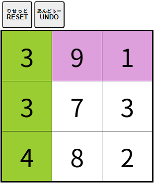

| 【グループ１０】 |
|
選択したマスの数字を足すと１０になるグループに分けましょう。  ・マスをクリック（タッチ）すると色が付きます。 ただし、選択したマスが隣り合っていなかったり、足した数が１０を超えるようなマスは選択できません。 ・赤い数字（－１）は引き算となります。上手に利用しましょう。 ・赤い数字（－１）を使うときは赤い数字からクリック（タッチ）するようにしましょう。 例えば、 ×：９・２・－１の順番では選択できません。 〇：－１・２・９の順番なら選択できます。 ・[RESET]ボタンをクリック（タッチ）すると最初からやり直す事ができます。 ・[UNDO]ボタンをクリック（タッチ）するとひとつ前の状態に戻す事ができます。 |